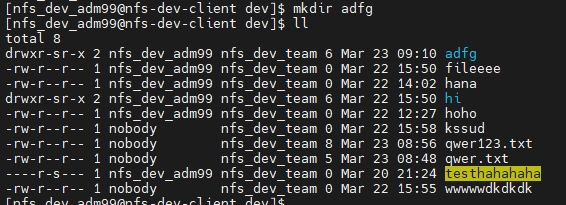
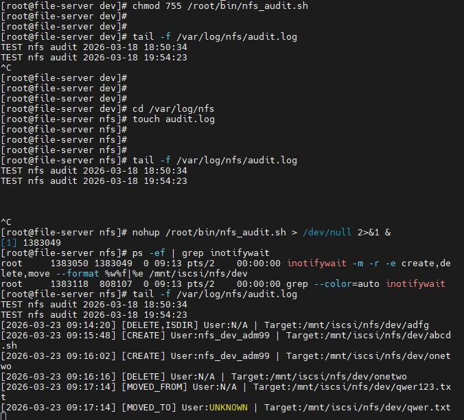

부서별 공유 경로 분리
nfs-utils와 NFS 서비스를 준비하고 iSCSI 볼륨 아래에 개발팀 /mnt/iscsi/nfs/dev, 운영팀 /mnt/iscsi/nfs/ops 경로를 구성했습니다. 디렉터리를 분리해 그룹 소유권과 접근 정책을 각각 관리했습니다.
공유 저장공간을 연결하는 것에서, 사용자마다 허용된 작업을 검증하는 것까지. Linux 기반 NFS 서비스와 부서별 접근 권한을 구성한 팀 프로젝트입니다.
스토리지 서버가 iSCSI로 블록 저장공간을 제공하고, 파일서버가 해당 저장공간의 디렉터리를 NFS로 공유합니다. SMB·백업·모니터링은 팀 연계 구성입니다.
draw.io에서 파일 → 열기 → 장치를 선택하면 다운로드한 원본을 편집할 수 있습니다.
구성도는 전체 설계를 설명합니다. 다중 경로와 백업 서버가 있다는 사실만으로 자동 장애 전환·무중단 운영·복구 테스트 완료를 의미하지 않습니다.
nfs-utils와 NFS 서비스를 준비하고 iSCSI 볼륨 아래에 개발팀 /mnt/iscsi/nfs/dev, 운영팀 /mnt/iscsi/nfs/ops 경로를 구성했습니다. 디렉터리를 분리해 그룹 소유권과 접근 정책을 각각 관리했습니다.
개발팀 GID 5001, 운영팀 GID 6001을 기준으로 관리자·일반 사용자 계정을 구성하고 id, getent로 숫자 UID/GID를 점검했습니다. 기본 AUTH_SYS 방식에서는 사용자 이름뿐 아니라 숫자 ID의 정합성이 중요합니다.
/etc/exports에서 공유 대상 호스트와 읽기·쓰기 정책을 설정하고 exportfs로 반영했습니다. 사용자별 작업 범위는 소유권·그룹·접근 ACL·mask로 점검했습니다. exports의 rw 허용만으로 모든 사용자에게 쓰기 권한이 부여되지는 않습니다.
공유 경로를 /mnt/nfs/dev에 마운트하고 df -h로 연결 상태를 확인했습니다. 일반 사용자의 진입·목록 조회와 생성 거부, 관리자의 디렉터리 생성 성공을 각각 확인했습니다.
/root/bin/nfs_audit.sh에서 공유 디렉터리를 감시하고 생성·삭제·이동 시각과 대상 경로를 /var/log/nfs/audit.log에 기록했습니다. 조회 가능한 파일 소유자를 함께 남겼으며, 실제 작업 수행자 식별과는 구분했습니다.
문제 — NFS 클라이언트 마운트 요청이 연결 오류로 실패했습니다.
점검·조치 — IP·VM 네트워크, 서비스 상태, 공유 대상, 방화벽을 나누어 확인하고 NFS 방화벽 허용 및 공유 설정을 반영했습니다.
결과 — 후속 자료의 df -h 화면에서 70G 원격 파일시스템 마운트가 확인됩니다.
남은 한계 — 최초 실패의 상세 로그가 없어 방화벽을 유일한 원인으로 단정하지 않습니다.
진단 기록 — 사용자 ACL은 rwx지만 mask가 r-x여서 유효 쓰기 권한이 제한된 출력이 있었습니다. 기본 ACL과 현재 디렉터리의 접근 ACL도 구분했습니다.
점검·조치 — UID/GID, 그룹 소유권, 상위 경로 탐색 권한, 접근 ACL과 mask를 확인·조정했습니다.
후속 검증 — 일반 사용자 생성 거부, 관리자 생성 성공을 확인했습니다. 초기 진단과 최종 시연의 계정명이 달라 하나의 원인·단일 조치로 해결됐다고 연결하지 않았습니다.
원인 후보 — 숫자 UID/GID, NFSv4 이름 매핑과 캐시, 익명 매핑 옵션, 기존 파일 소유권을 점검했습니다.
조치 — 이름 매핑 설정을 확인하고 nfsidmap -c와 재마운트를 진행한 기록이 있습니다.
결과·한계 — 새 디렉터리는 예상 사용자·그룹으로 표시됐지만 기존 일부 파일은 nobody로 남았습니다. 전체 해결로 표현하지 않습니다.
문제 — 삭제·이동 이벤트의 일부 사용자 필드가 N/A 또는 UNKNOWN으로 남았습니다.
분석 — 이벤트 후 stat로 소유자를 조회하므로 삭제되거나 이동한 경로는 조회에 실패할 수 있습니다. 조회에 성공해도 파일 소유자이며 실제 작업 수행자는 아닙니다.
확인 범위 — 이벤트 종류와 대상 경로 수집은 확인했습니다. 모든 사용자 행위를 식별하는 감사 시스템으로 설명하지 않습니다.


성과는 제공된 실습 자료와 대화 요약의 확인 범위입니다. 이번 포트폴리오 작성에서 서버를 재실행한 결과가 아니며, 성능 개선율·복구 시간·가용성 수치는 측정 자료가 없어 기재하지 않았습니다.
iSCSI는 RAID·LVM 기반의 블록 저장공간을 파일서버에 제공합니다. 저는 제공된 저장공간의 디렉터리를 NFS 공유 대상으로 구성했습니다. CHAP은 인증 기능이며 전송 암호화와는 다릅니다.
SMB는 이기종 클라이언트의 파일 공유를 위한 팀 구성입니다. Linux 파일서버의 SMB와 별도 Windows SMB 서버를 포함하며, 개인 구현 범위인 NFS와 구분합니다.
iSCSI 스토리지와 연계한 Linux NFS 파일서버를 구축하고 부서별 공유 디렉터리를 구성했습니다. 서버·클라이언트 UID/GID와 파일 소유권, POSIX ACL을 점검해 사용자별 접근 권한을 관리했습니다. 연결 장애와 ACL 유효 권한, 이름 매핑 문제를 단계별로 점검하고 실제 클라이언트 작업으로 결과를 확인했습니다. Bash와 inotify-tools로 파일 생성·삭제·이동 이벤트를 수집하고, 소유자 조회와 실제 수행자 식별의 차이를 기록했습니다.
참고 자료: 5조 파일서버 발표자료(28장), 워크북 PDF(17쪽), draw.io 원본, 제공된 GPT 대화 요약. 원본의 경로 오기·권한 설명은 그대로 옮기지 않고 요약에서 정정한 범위에 맞췄습니다.
협업 프로젝트 목록으로 →